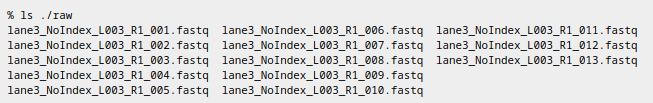
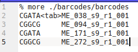
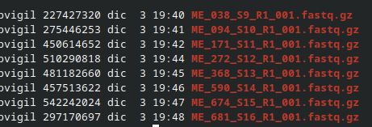
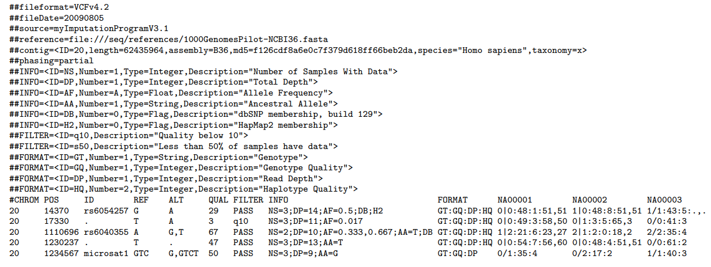
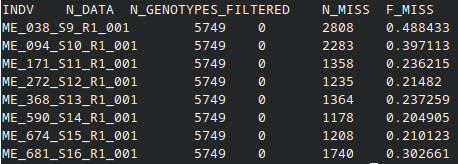
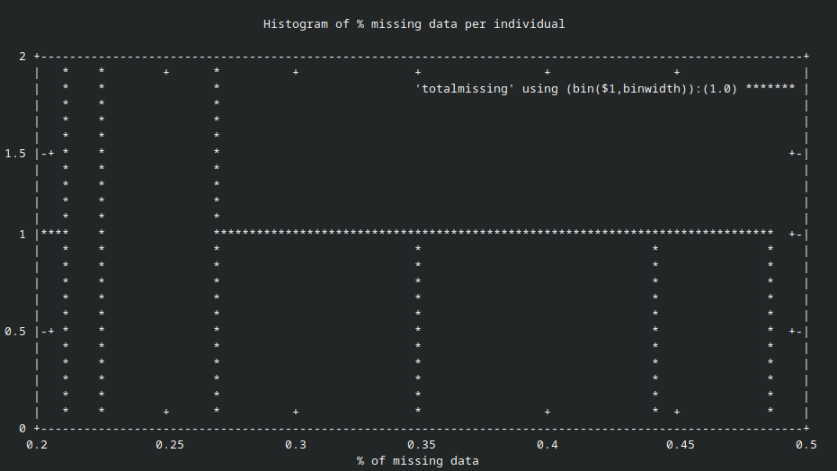
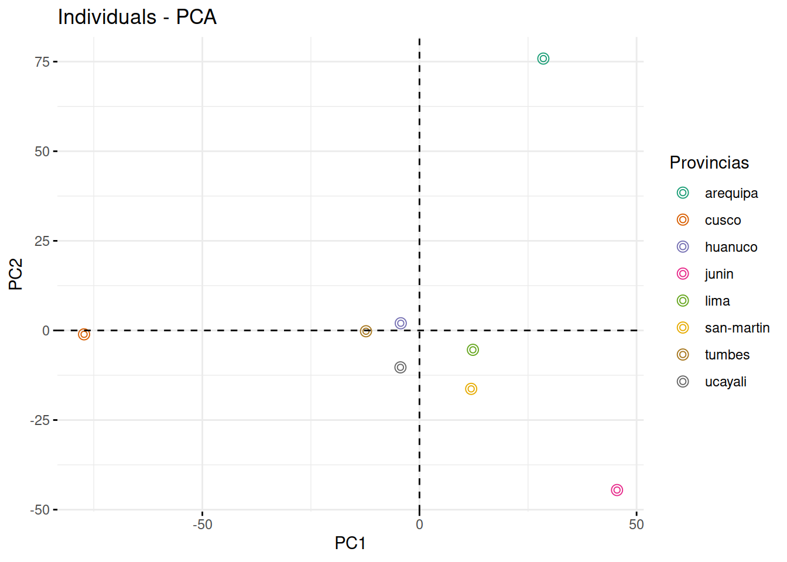
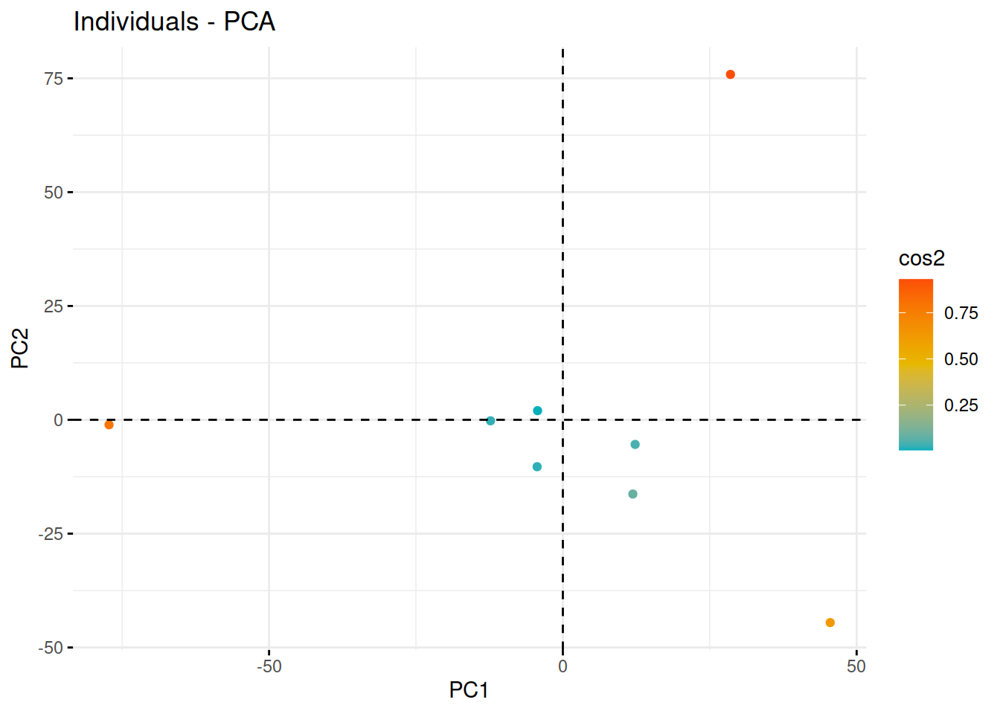

GBS
bvigil
7/12/2021

DEMULTIPLEXACIÓN - FILTRADO - STACKS
1.RawData

2.Barcodes para cada individuo

3.Demultiplexado o individualización

ALINEAMIENTO A GENOMA DE REFERENCIA
1.INSTALACIÓN DE PROGRAMAS
BWA - BORROWS WHEELER ALIGNER
sudo apt-get update
sudo apt-get install bwaSAMTOOLS
sudo apt-get update
sudo apt-get install samtools2.INDEXADO DEL GENOMA DE REFERENCIA
#!/bin/bash
src="/home/bvigil/GBS_SEMINARIO/genoma"
bwa index -p manihot-index -a bwtsw $src/GCF_001659605.2_M.esculenta_v8_genomic.fna3.ALINEAMIENTO
#!/bin/bash
src="/home/bvigil/GBS_SEMINARIO/"
bwa_db="/home/bvigil/GBS_SEMINARIO/genoma/manihot-index"
files="ME_038_S9_R1_001
ME_094_S10_R1_001
ME_171_S11_R1_001
ME_272_S12_R1_001
ME_368_S13_R1_001
ME_590_S14_R1_001
ME_674_S15_R1_001
ME_681_S16_R1_001"
for ME in $files
do
bwa mem -t 12 $bwa_db $src/data/${ME}.fastq.gz > $src/alineamiento/${ME}.sam
done
4.SAM –> BAM
#!/bin/bash
src="/home/bvigil/GBS_SEMINARIO/"
files="ME_038_S9_R1_001
ME_094_S10_R1_001
ME_171_S11_R1_001
ME_272_S12_R1_001
ME_368_S13_R1_001
ME_590_S14_R1_001
ME_674_S15_R1_001
ME_681_S16_R1_001"
for ME in $files
do
samtools view -b -S $src/alineamiento/${ME}.sam -o $src/alineamiento/${ME}.bam
done5.SORT
#!/bin/bash
src="/home/bvigil/GBS_SEMINARIO/alineamiento/"
files="ME_038_S9_R1_001
ME_094_S10_R1_001
ME_171_S11_R1_001
ME_272_S12_R1_001
ME_368_S13_R1_001
ME_590_S14_R1_001
ME_674_S15_R1_001
ME_681_S16_R1_001"
for ME in $files
do
samtools sort $src/${ME}.bam -o $src/sort/${ME}.bam
doneGSTACKS - STACKS
#!/bin/bash
src="/home/bvigil/GBS_SEMINARIO"
gstacks -I $src/alineamiento/sort/ -M $src/scripts/popmap-yuca-piloto -O $src/stacks -t 24POPULATIONS - VCF
SNP-CALLING
#!/bin/bash
src="/home/bvigil/GBS_SEMINARIO"
populations -P $src/stacks/ -M $src/scripts/popmap-yuca-piloto --vcf --plink -t 24FORMATO
VCF es un formato de archivo de texto (lo más probable es que se almacene de forma comprimida). Contiene líneas de metainformación, una línea de encabezado y luego líneas de datos, cada una de las cuales contiene información sobre una posición en el genoma. El formato también tiene la capacidad de contener información de genotipo en muestras para cada posición.

PROGRAMAS -FILTRADO DE SNPs
1.VCFTOOLS
sudo apt-get update
sudo apt-get install vcftools2.BCFTOOLS
sudo apt-get update
sudo apt-get install bcftoolsFILTRADO A NIVEL DE LOCI-VARIANTE-SNP
Solo se mantendran a variantes que se hayan genotipado con éxito en el 50% de los individuos de nuestra población.
vcftools --vcf /home/bvigil/GBS_SEMINARIO/stacks/yuca.chr14.recode.vcf --max-missing 0.5 --recode --recode-INFO-all --out /home/bvigil/GBS_SEMINARIO/stacks/yuca.chr14.maxmissing0.5 ##
## VCFtools - 0.1.16
## (C) Adam Auton and Anthony Marcketta 2009
##
## Parameters as interpreted:
## --vcf /home/bvigil/GBS_SEMINARIO/stacks/yuca.chr14.recode.vcf
## --recode-INFO-all
## --max-missing 0.5
## --out /home/bvigil/GBS_SEMINARIO/stacks/yuca.chr14.maxmissing0.5
## --recode
##
## After filtering, kept 8 out of 8 Individuals
## Outputting VCF file...
## After filtering, kept 5749 out of a possible 8110 Sites
## Run Time = 0.00 secondsFILTRADO POR INDIVIDUOS
Este paso es para eliminar a los individuos que no se secuenciaron bien, que presentan datos faltantes por loci. Esto se realiza evaluando los niveles individuales de datos faltantes.
vcftools --vcf /home/bvigil/GBS_SEMINARIO/stacks/yuca.chr14.maxmissing0.5.recode.vcf --missing-indv##
## VCFtools - 0.1.16
## (C) Adam Auton and Anthony Marcketta 2009
##
## Parameters as interpreted:
## --vcf /home/bvigil/GBS_SEMINARIO/stacks/yuca.chr14.maxmissing0.5.recode.vcf
## --missing-indv
##
## After filtering, kept 8 out of 8 Individuals
## Outputting Individual Missingness
## After filtering, kept 5749 out of a possible 5749 Sites
## Run Time = 0.00 secondsrevisamos el out.imiss

Observamos la data faltante por individuo en un histograma
#!/bin/bash
mawk '!/IN/' /home/bvigil/GBS_SEMINARIO/stacks/out.imiss | cut -f5 > /home/bvigil/GBS_SEMINARIO/stacks/totalmissing
gnuplot << \EOF
set terminal dumb size 120, 30
set autoscale
unset label
set title "Histogram of % missing data per individual"
set ylabel "Number of Occurrences"
set xlabel "% of missing data"
#set yr [0:100000]
binwidth=0.01
bin(x,width)=width*floor(x/width) + binwidth/2.0
plot 'totalmissing' using (bin($1,binwidth)):(1.0) smooth freq with boxes
pause -1
EOF./hist_miss.sh
FILTRADO POR FRECUENCIA DE ALELO MENOR - MAF
Este filtrado es importante y depende de los objetivos del estudio, el tipo y la cantidad de individuos de la población. Por lo general se hace un filtrado de maf 0.01, esto significa que se eliminaran aquellos loci cuyo alelo menor tenga una frecuencia menor al 1%.
vcftools --vcf /home/bvigil/GBS_SEMINARIO/stacks/yuca.chr14.maxmissing0.5.recode.vcf --maf 0.01 --recode --recode-INFO-all --out /home/bvigil/GBS_SEMINARIO/stacks/yuca.chr14.maxmissing0.5.maf0.01##
## VCFtools - 0.1.16
## (C) Adam Auton and Anthony Marcketta 2009
##
## Parameters as interpreted:
## --vcf /home/bvigil/GBS_SEMINARIO/stacks/yuca.chr14.maxmissing0.5.recode.vcf
## --recode-INFO-all
## --maf 0.01
## --out /home/bvigil/GBS_SEMINARIO/stacks/yuca.chr14.maxmissing0.5.maf0.01
## --recode
##
## After filtering, kept 8 out of 8 Individuals
## Outputting VCF file...
## After filtering, kept 5749 out of a possible 5749 Sites
## Run Time = 0.00 secondsANALISIS DE ESTRUCTURA POBLACIONAL
1.- ACTIVAR PAQUETES EN R :
library("adegenet")## Loading required package: ade4##
## /// adegenet 2.1.5 is loaded ////////////
##
## > overview: '?adegenet'
## > tutorials/doc/questions: 'adegenetWeb()'
## > bug reports/feature requests: adegenetIssues()library("vcfR")##
## ***** *** vcfR *** *****
## This is vcfR 1.12.0
## browseVignettes('vcfR') # Documentation
## citation('vcfR') # Citation
## ***** ***** ***** *****library("ggplot2")### cargar el archivo VCF filtrado####
yuca_vcf<-read.vcfR("yuca.chr14.maxmissing0.5.maf0.01.recode.vcf")## Scanning file to determine attributes.
## File attributes:
## meta lines: 14
## header_line: 15
## variant count: 5749
## column count: 17
##
Meta line 14 read in.
## All meta lines processed.
## gt matrix initialized.
## Character matrix gt created.
## Character matrix gt rows: 5749
## Character matrix gt cols: 17
## skip: 0
## nrows: 5749
## row_num: 0
##
Processed variant 1000
Processed variant 2000
Processed variant 3000
Processed variant 4000
Processed variant 5000
Processed variant: 5749
## All variants processed####convertir a formato genind ####
gl_yuca<-vcfR2genlight(yuca_vcf)
###indicar ploidia####
ploidy(gl_yuca)<-2
###cargar el mapa de poblacion ###
mapa_pop<-read.csv("mapa2.csv", sep = ",", header = T)
pop(gl_yuca)<-mapa_pop$provincia
####añadimos estratificación ####
strata(gl_yuca)<-data.frame(mapa_pop$provincia)
nameStrata(gl_yuca)<-~provincia
table(strata(gl_yuca, ~provincia))##
## huanuco lima tumbes arequipa ucayali cusco junin
## 1 1 1 1 1 1 1
## san-martin
## 1#### Análisis multivariado PCA####
clust_yuca<-tab(gl_yuca, freq=T, NA.method="mean")
pca_yuca<-dudi.pca(clust_yuca, scale = T, scannf = F)
library("RColorBrewer")
cols <- brewer.pal(n = nPop(gl_yuca), name = "Dark2")
#### graficar PCA####
library("factoextra")## Welcome! Want to learn more? See two factoextra-related books at https://goo.gl/ve3WBafviz_pca_ind(pca_yuca, geom.ind = "point", col.ind = gl_yuca$pop, palette = cols, addEllipses = FALSE, ellipse.type="confidence", legend.title = "Provincias", pointshape=1, cpoint=1, xlab="PC1", ylab="PC2")
fviz_pca_ind(pca_yuca, col.ind = "cos2", gradient.cols = c("#00AFBB", "#E7B800", "#FC4E07"),repel = FALSE, label="none", addEllipses = FALSE, ellipse.type="euclid", xlab="PC1", ylab="PC2", pointshape=19, cpoint=1)